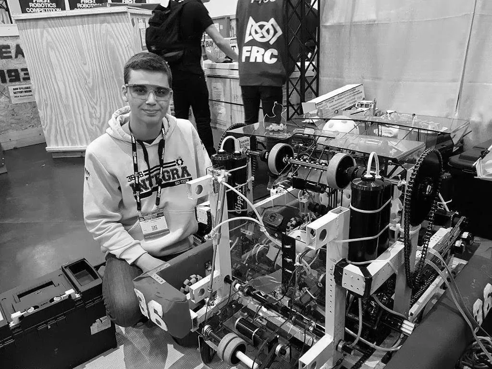
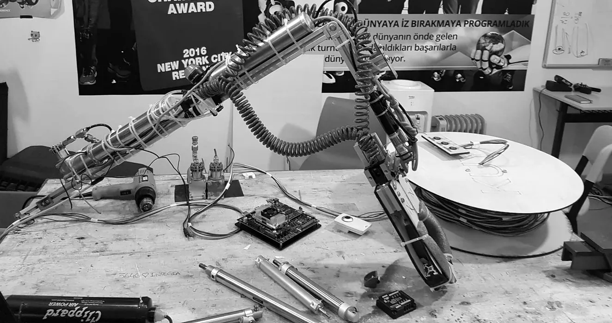
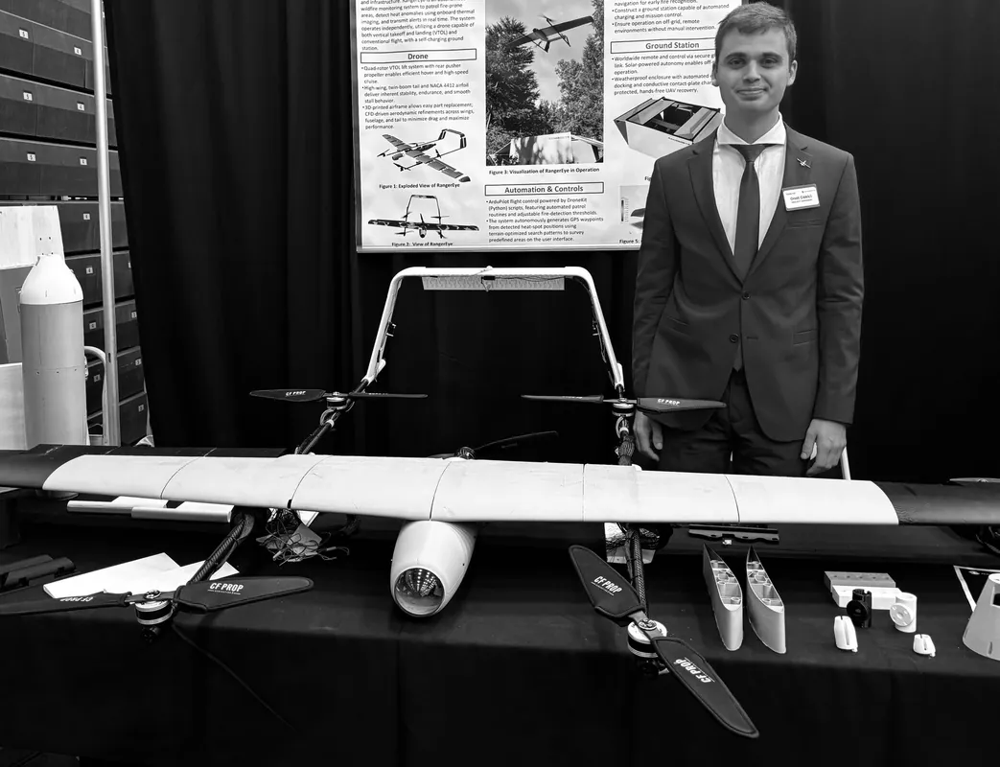

We build robot technicians
Ragnar Robotics is a robotics company in Miami. We build mobile robots that change their own tools and take on the repetitive work in machine shops, print farms, data centers and buildings. R2 loads machines and swaps print plates. R1 paints, drills and sands walls. Both run on one base, and both are designed and simulated in CAD. Next, a real arm runs the first task, and the first pilots start in South Florida.
Why one base
A fixed robot arm pays off on a machine that runs all day. A small shop has many machines that each need a little loading every hour, plus plates to swap and parts to move. So our robots drive: one robot goes to whichever machine needs it, and changes tools for the other chores.
R1 and R2 share that base, with a different top for each job: a lift and an arm with two grippers for machines, a mast and six tools for walls. One base means one design to build, test and service, and every improvement to it reaches both robots.
How we work
- Standard parts
- Our robots are built from parts we can order: collaborative arms, lift columns, grippers, LiDAR and depth cameras. A repair should be a part swap, not a trip back to us.
- Failure modes first
- Before building, we list the ways a robot could fail, from a dropped part to a tip over, and give each a design answer and a test.
- Numbers you can check
- Every figure on this site is a design target, a simulation result or a sourced fact, and we say which.
- Safety on site
- Our robots are designed to pause when a person comes close. During pilots, our team stays on site.
Build log
Gave Mini two arms for light technician work: swapping parts, pressing buttons, plugging in cables and checking equipment.
Put R2 on the same chassis as R1, so both share one base with swappable tops.
Started Mini, a small round robot for data centers.
Started R2, a technician for machine shops, print farms and data centers.
Finished the CAD design of R1: base, three stage mast, arm and six tools, with weight, tipping and reach checks.
Animated a full R1 job from the CAD model, with every move checked for collisions.
Second design: a robot that rolls paint the way a painter does and carries its tools on one arm.
Started on robots for the repetitive work inside buildings, in Miami.
Next
A real arm on the first task, on video: swapping print plates, then loading a CNC vise.
Then
The first pilots in South Florida machine shops and print farms, then the full robot.
Founder
Onat leads the design of Ragnar's robots: the CAD models, the motion planning and the failure analysis. He is an aerospace engineer, with a B.S. from the Florida Institute of Technology (2025). He has built robots since he was 16: he designed competition robots with FIRST Robotics team Integra 3646, which qualified for the FIRST Championship twice, and helped build a telescoping arm that firefighters used to pull a trapped puppy from a well in Istanbul (Reuters, 2017). Before Ragnar, he led a nine engineer team that built an autonomous VTOL drone for early wildfire detection.



Cofounder wanted
We are looking for a founding robotics engineer to own the software that lets our robots see and decide.
You have put robot software on real hardware: ROS 2, perception and manipulation, ideally an arm in real use. Onat covers the hardware, the CAD and the customers. This is a cofounder role, with equity.
The company
- Name
- Ragnar Robotics is a brand of Urban Robotics Technologies, Inc., a Delaware corporation
- Based in
- Miami, Florida
- First jobs
- Loading CNC machines and swapping print plates, with R2
- Robots
- R2 for machine shops and print farms, R1 for walls and ceilings on the same base, and Mini for light technician tasks
- Stage
- In development: R1 and R2 are designed and simulated in CAD, and a real arm on the first task and the first pilots come next
- Contact
- hello@ragnarrobotics.com, for pilots, investors and press
Talk to us
Run a machine shop, a print farm, a data center or buildings in South Florida? Help us plan the first pilots. It starts with a 15 minute call about the task you want a robot to take over: what it is, how often it comes up and what slows it down. Nothing is for sale yet.
Book a 15 minute callhello@ragnarrobotics.com
This site sets no cookies.